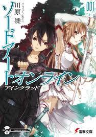
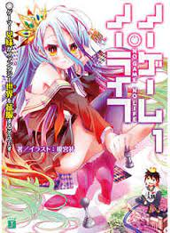

ライトノベルは、日本で生まれた言葉で、娯楽小説のジャンルの1つ。英単語のlightとnovelを組み合わせた和製英語です。
略語としてはラノベ。以下ラノベと表記します。
ラノベの元となる小説は1970頃に登場し始めたと言われていますが、「ライトノベル」という言葉自体が生まれたのは1990年代の初め。
その頃には、漫画・アニメ・ゲームなどのメディアミックスの一つとして、すでに地位を確立していました。しかし、2000年代に入りさらに
その状況は一変！いわゆる＂オタクブーム＂旋風が巻き起こり、「萌え」という概念が広まったことで、漫画・アニメ好きを中心に今まで以上
にライトノベルが注目を集めるようになります。
ラノベの特徴として作者のほとんどは若者をターゲットに執筆しているので、難しい言葉やわかりにくい表現を意図的に少なくしています。
主人公も10代の少年・少女の場合がほとんどで、若い人には特に共感できる部分も多いのではないでしょうか。
また、ラノベは別名・キャラクター小説と呼ばれるほど、キャラクター設定も綿密に作り込まれているので、自分の好きな登場人物を
見つけやすいです。読んでいるうちに、思わずそのキャラのファンになってしまうこともしばしば。しかも、漫画のような斬新な展開
やコミカルな描写も多いため、【難しく考える必要が無い＝とても読みやすい】ストーリー構成になっています。
1つめはソードアートオンライン(SAO)です。ラノベやアニメ、ゲームが好きな人はこの作品名を聞いたことがある人が多いと思います。
この作品で出てくるキャラはかっこいい、かわいい、クール、悪役などたくさんいますが、主の推しはユウキです。みなさんはだれが好きでしょうか。
あらすじや細かい説明は各書籍紹介でしているのでぜひ見てください。

2つめはノーゲームノーライフです。最近、作者が数年ぶりに新刊をだしてまだまだ続きの気になる作品です。
1巻から読者をあっと言わせる展開で盛り上げつつ、絶妙にネタをぶち込んで笑わせてくる素晴らしい作品です。
あらすじや細かい説明は各書籍紹介でしているのでぜひ見てください。
